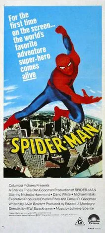
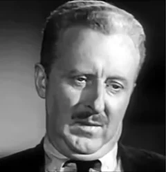
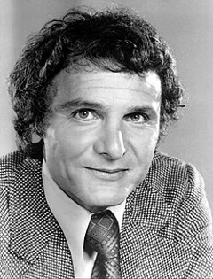

Spider-Man (1977)
| Movie | Release Date | Poster |
|---|---|---|
| Spider-Man 1h 30m · action |  |
| Trailer |
|---|
| No official trailer is available for this film. |
| Rotten Tomatoes | Metacritic | IMDb |
|---|---|---|
| Not available | Not available | View on IMDb |
| Overview |
|---|
Spider-Man is a 1977 American television superhero film that aired on CBS and had a theatrical release outside the US, which serves as the pilot to the 1977 television series titled The Amazing Spider-Man. It was directed by E. W. Swackhamer, written by Alvin Boretz and stars Nicholas Hammond as the titular character, David White, Michael Pataki, Jeff Donnell and Thayer David. Full plot (spoilers)Peter Parker , a freelance photographer for the Daily Bugle , is bitten by a radioactive spider and discovers he has gained superpowers, such as super-strength, agility and the ability to climb sheer walls and ceilings. When a mysterious Guru places people under mind-control - including a doctor and lawyer - to rob banks, Peter becomes the costumed hero Spider-Man to stop the crook's fiendish scheme. The Guru then announces that he will hypnotize ten New Yorkers, chosen at random, into committing suicide unless the city pays him $50 million, which becomes a Daily Bugle headline, "Are You One of the Ten People?". The situation becomes even worse when Peter Parker and his friend Judy Tyler are hypnotized into being two of the people to defenestrate themselves from the Empire State Building by week's end. With some luck, Peter is able to break free of the hypnosis and then stop the Guru in his tracks. |
| Actor | Character | Photo |
|---|---|---|
| Nicholas Hammond | Peter Parker / Spider-Man |  |
| David White | J. Jonah Jameson |  |
| Michael Pataki | Capt. Barbera |  |
| Hilly Hicks | Joe "Robbie" Robertson | No photo |
| Lisa Eilbacher | Judy Tyler | No photo |
| Jeff Donnell | May Parker | |
| Robert Hastings | Monahan | No photo |
| Ivor Francis | Professor Noah Tyler | No photo |
| Thayer David | Edward Byron | No photo |
| Len Lesser | Henchman | No photo |
| Norman Rice | Henchman | No photo |
| Bob Hastings | – | No photo |
| Detail | Value |
|---|---|
| Directed by | E.W. Swackhamer |
| Written by | Alvin Boretz |
| Produced by | Edward Montagne |
| Music by | Johnnie Spence |
| Cinematography | Fred Jackman |
| Edited by | Not available |
| Production companies | Not available |
| Distributed by | Columbia Pictures |
| Running time | 90 minutes |
| MPAA rating | Not rated |
| Budget | Not available |
| Box office | $9 million |
Overview, plot, and cast descriptions are from Wikipedia (CC BY-SA 4.0). Credits, ratings, and box office are from Wikidata.